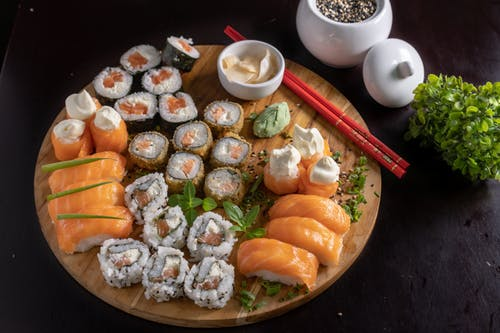
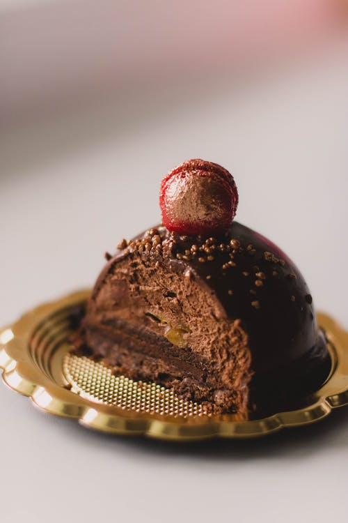

They handed out a fruit platter that I know costs $50.00 of exotic fruits to the passengers
I purchased economy seats on the Kreme D'Airline's World-Plane Number 567. Little did I know that all seats in
World-Plane Number 567 are luxury seats. Apparently, the airline deliberately created a plane (in fact, World-Plane Number
567 is the only the air-plane in Kreme D'Airlines that is a luxury plane) for the sole-purpose of flying important
ceo's and high level executives. However, Kreme D'Airlines is a public plane. They made it public for environmental reasons
since solo-private planes are not good for the environment as they release more carbon-dioxide but take significantly less
passengers. High ranking ceos and exceutives typically do not want to preuse public planes, therefore, Kreme D'Airlines
gets regular customers. They still decided to keep the World-Plane Number 567 a luxury-interior plane. So commoners such as
myself can get cheaper priced airplane tickets (or as cheap as flying to Great Britain can be) with all the amentities of a
private luxury plane. I purchased round-trip regular tickets (with no discounts) for $300 to and from. In total, I paid $600.
To say the least, I strongly recommend you use this airline to travel internationally or inside your
country. The airline's service was absolutely outstanding. The flight-attendants were professional, friendly, and appeared
every 20 minutes to refill the drink of your choice and give delicious assortments of luxury snacks. One of the best things
about luxury planes is that they don't make pit-stops anywhere else. Therefore, World-Plane Number 567 has no
stops and so flights are shorter. I landed in London City Airport after 7 hours and 20 minutes.

They also handed out sushi platters

Towards the end of the flight, they give out chocolate mousse